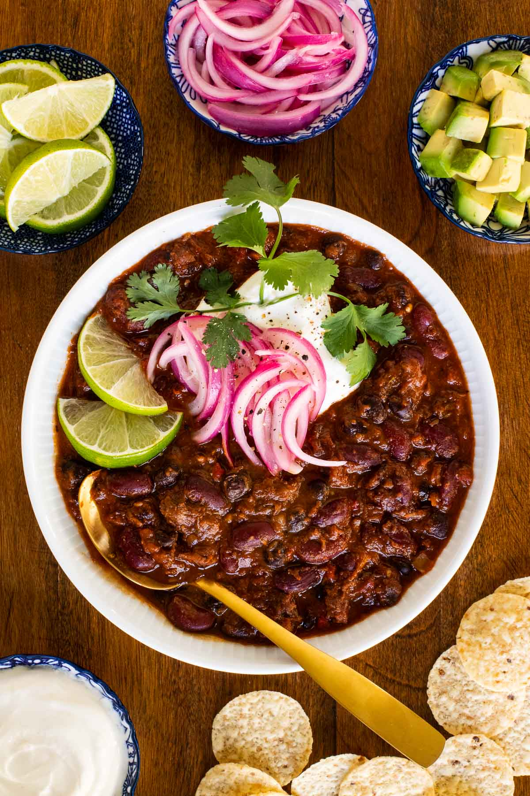

Slow Roasted Short Rib Chili Recipe
Home

Description
Let the oven do the magic instead of messing up your stove-top! This delicious Slow Roasted Short Rib Chili (can also be made with chuck roast) is loaded with chunks of super tender beef and lots of healthy beans and veggies!
Prep Time 25 minutes
Cook Time 3 hours
Resting Time 30 minutes
Total Time 3 hours and 55 minutes
Ingredients
For the rub:
- 1 tablespoon brown sugar
- 1 tablespoon ground cumin
- 1 tablespoon oregano
- 2 teaspoons onion powder
- 2 teaspoons garlic salt
- 2 teaspoons ground coriander
- 1-3 teaspoons chili powder more to taste
For the beef:
- 3 pounds boneless beef short ribs or chuck roast cut into 1-inch pieces (or well-marbled chuck roast)
- 2 cups beef broth (divided)
For the chili
- 1 large yellow onion diced small
- 2 medium red or orange bell peppers diced small
- 4 medium cloves of garlic finely minced
- 1 14½- ounce can fire-roasted tomatoes
- 1 28- ounce-can crushed tomatoes
- 2 15½- ounce cans dark red kidney beans rinsed and well-drained
- 2 15½- ounce cans black beans rinsed and well-drained
- 1 6- ounce can tomato paste
- 1 pepper plus 1 tablespoon of the sauce chipotle in adobo
- 1 teaspoon kosher salt more to taste
For garnish
- Any or all of the following: pickled red onions (see recipe in the post), or diced white onions, diced, avocado, sour cream, shredded cheese, sliced jalapeño, cilantro leaves, lime wedges, tortilla chips.
Steps
- Combine all of the rub ingredients in a small bowl and set aside.
- Cut short ribs (or chuck roast) into 1-inch pieces, discarding any large areas of fat. Place meat in a large bowl.
- Add the rub to the bowl and toss to coat. Allow meat to sit for 30 minutes or cover tightly and refrigerate overnight.
- Preheat oven to 300˚F.
- Transfer the meat to a large (6-quart) Dutch oven. Spread the meat to an even layer then pour 1 cup of the broth over the meat (refrigerate the remaining cup of broth). Cook over medium-high heat, just until the broth comes to a boil. Remove from heat, cover the pot tightly and place it in the preheated oven. Roast for 2-2½ hours or until meat is fork-tender.
- Towards the end of the beef roasting time, dice the onion and bell pepper nice and small (about ½-inch) and mince the garlic.
- When the meat is tender, remove the pot from the oven and increase the oven temperature to 400˚F. Immediately add the diced onion, pepper and the garlic to the pot. Stir well to combine.
- Cover and allow the pot to sit for 5 minutes to allow the veggies to soften. Add the remaining chili ingredients (tomatoes, beans, etc.) and the reserved beef broth. Stir well, cover and return to the oven for another 45 minutes. (If you like your chili a little thicker, return the pot to the oven for another 10 minutes, uncovered.)
- Remove from the oven, stir well and cover. Allow chili to sit for at least 20 minutes to allow the flavors to marry and meld. Taste and season with more salt, if needed. If you like a spicier chili you can add additional chili powder or chipotle at this point. Garnish as desired.